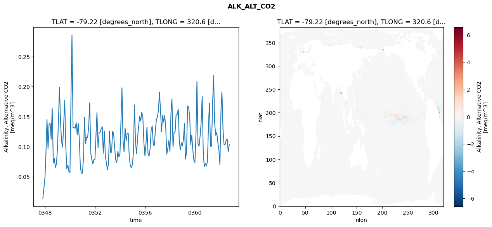
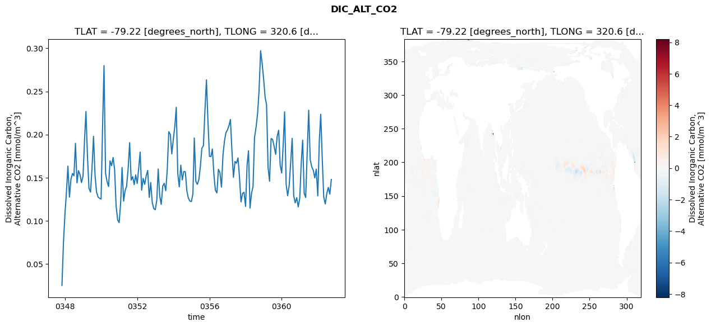
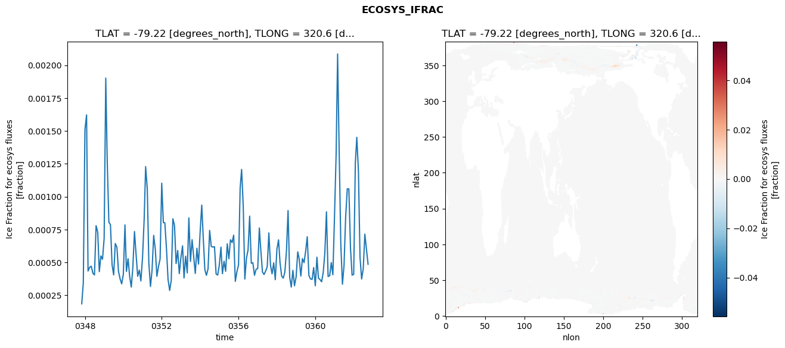
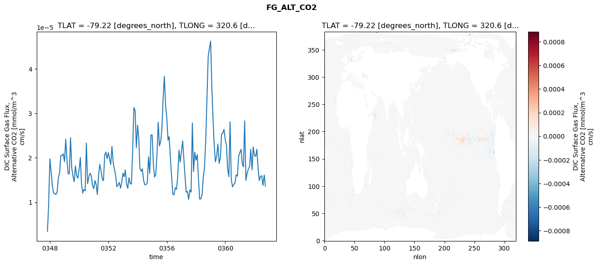

glb-dor_North_Atlantic_basin_038_1999-10-01_00155#
Simulation details#
Case: smyle.cdr-atlas-v0.glb-dor_North_Atlantic_basin_038_1999-10-01_00155.001
Basin: North_Atlantic_basin
Polygon: 38.0
Start date: 1999-10
Show code cell source Hide code cell source
import xarray as xr
import matplotlib.pyplot as plt
Show code cell source Hide code cell source
zarr_store = "/path/to/zarr/store"
# Parameters
zarr_store = "/global/cfs/projectdirs/m4746/Projects/Ocean-CDR-Atlas-v0/data/validation/smyle.cdr-atlas-v0.glb-dor_North_Atlantic_basin_038_1999-10-01_00155.001.validation.zarr"
Show code cell source Hide code cell source
%%time
ds_o = xr.open_zarr(zarr_store).compute()
ds_o
CPU times: user 599 ms, sys: 441 ms, total: 1.04 s
Wall time: 1.33 s
<xarray.Dataset> Size: 2MB
Dimensions: (nlat: 384, nlon: 320, time: 180)
Coordinates:
TLAT float64 8B -79.22
TLONG float64 8B 320.6
ULAT float64 8B -78.95
ULONG float64 8B 321.1
* time (time) object 1kB 0347-11-01 00:00:00 ... 0362-10-01 0...
z_t float32 4B 500.0
Dimensions without coordinates: nlat, nlon
Data variables:
ALK_ALT_CO2_diff (nlat, nlon) float32 492kB nan nan nan ... nan nan nan
ALK_ALT_CO2_rmse (time) float64 1kB 0.01447 0.03083 ... 0.09163 0.1035
DIC_ALT_CO2_diff (nlat, nlon) float32 492kB nan nan nan ... nan nan nan
DIC_ALT_CO2_rmse (time) float64 1kB 0.02501 0.07441 ... 0.1309 0.1479
ECOSYS_IFRAC_diff (nlat, nlon) float32 492kB nan nan nan ... nan nan nan
ECOSYS_IFRAC_rmse (time) float64 1kB 0.0001853 0.0003456 ... 0.000486
FG_ALT_CO2_diff (nlat, nlon) float32 492kB nan nan nan ... nan nan nan
FG_ALT_CO2_rmse (time) float64 1kB 3.48e-06 9.531e-06 ... 1.364e-05xarray.Dataset
- nlat: 384
- nlon: 320
- time: 180
- TLAT()float64-79.22
- long_name :
- array of t-grid latitudes
- units :
- degrees_north
array(-79.22052261)
- TLONG()float64320.6
- long_name :
- array of t-grid longitudes
- units :
- degrees_east
array(320.56250892)
- ULAT()float64-78.95
- long_name :
- array of u-grid latitudes
- units :
- degrees_north
array(-78.95289509)
- ULONG()float64321.1
- long_name :
- array of u-grid longitudes
- units :
- degrees_east
array(321.12500894)
- time(time)object0347-11-01 00:00:00 ... 0362-10-...
- bounds :
- time_bound
- long_name :
- time
array([cftime.DatetimeNoLeap(347, 11, 1, 0, 0, 0, 0, has_year_zero=True), cftime.DatetimeNoLeap(347, 12, 1, 0, 0, 0, 0, has_year_zero=True), cftime.DatetimeNoLeap(348, 1, 1, 0, 0, 0, 0, has_year_zero=True), cftime.DatetimeNoLeap(348, 2, 1, 0, 0, 0, 0, has_year_zero=True), cftime.DatetimeNoLeap(348, 3, 1, 0, 0, 0, 0, has_year_zero=True), cftime.DatetimeNoLeap(348, 4, 1, 0, 0, 0, 0, has_year_zero=True), cftime.DatetimeNoLeap(348, 5, 1, 0, 0, 0, 0, has_year_zero=True), cftime.DatetimeNoLeap(348, 6, 1, 0, 0, 0, 0, has_year_zero=True), cftime.DatetimeNoLeap(348, 7, 1, 0, 0, 0, 0, has_year_zero=True), cftime.DatetimeNoLeap(348, 8, 1, 0, 0, 0, 0, has_year_zero=True), cftime.DatetimeNoLeap(348, 9, 1, 0, 0, 0, 0, has_year_zero=True), cftime.DatetimeNoLeap(348, 10, 1, 0, 0, 0, 0, has_year_zero=True), cftime.DatetimeNoLeap(348, 11, 1, 0, 0, 0, 0, has_year_zero=True), cftime.DatetimeNoLeap(348, 12, 1, 0, 0, 0, 0, has_year_zero=True), cftime.DatetimeNoLeap(349, 1, 1, 0, 0, 0, 0, has_year_zero=True), cftime.DatetimeNoLeap(349, 2, 1, 0, 0, 0, 0, has_year_zero=True), cftime.DatetimeNoLeap(349, 3, 1, 0, 0, 0, 0, has_year_zero=True), cftime.DatetimeNoLeap(349, 4, 1, 0, 0, 0, 0, has_year_zero=True), cftime.DatetimeNoLeap(349, 5, 1, 0, 0, 0, 0, has_year_zero=True), cftime.DatetimeNoLeap(349, 6, 1, 0, 0, 0, 0, has_year_zero=True), cftime.DatetimeNoLeap(349, 7, 1, 0, 0, 0, 0, has_year_zero=True), cftime.DatetimeNoLeap(349, 8, 1, 0, 0, 0, 0, has_year_zero=True), cftime.DatetimeNoLeap(349, 9, 1, 0, 0, 0, 0, has_year_zero=True), cftime.DatetimeNoLeap(349, 10, 1, 0, 0, 0, 0, has_year_zero=True), cftime.DatetimeNoLeap(349, 11, 1, 0, 0, 0, 0, has_year_zero=True), cftime.DatetimeNoLeap(349, 12, 1, 0, 0, 0, 0, has_year_zero=True), cftime.DatetimeNoLeap(350, 1, 1, 0, 0, 0, 0, has_year_zero=True), cftime.DatetimeNoLeap(350, 2, 1, 0, 0, 0, 0, has_year_zero=True), cftime.DatetimeNoLeap(350, 3, 1, 0, 0, 0, 0, has_year_zero=True), cftime.DatetimeNoLeap(350, 4, 1, 0, 0, 0, 0, has_year_zero=True), cftime.DatetimeNoLeap(350, 5, 1, 0, 0, 0, 0, has_year_zero=True), cftime.DatetimeNoLeap(350, 6, 1, 0, 0, 0, 0, has_year_zero=True), cftime.DatetimeNoLeap(350, 7, 1, 0, 0, 0, 0, has_year_zero=True), cftime.DatetimeNoLeap(350, 8, 1, 0, 0, 0, 0, has_year_zero=True), cftime.DatetimeNoLeap(350, 9, 1, 0, 0, 0, 0, has_year_zero=True), cftime.DatetimeNoLeap(350, 10, 1, 0, 0, 0, 0, has_year_zero=True), cftime.DatetimeNoLeap(350, 11, 1, 0, 0, 0, 0, has_year_zero=True), cftime.DatetimeNoLeap(350, 12, 1, 0, 0, 0, 0, has_year_zero=True), cftime.DatetimeNoLeap(351, 1, 1, 0, 0, 0, 0, has_year_zero=True), cftime.DatetimeNoLeap(351, 2, 1, 0, 0, 0, 0, has_year_zero=True), cftime.DatetimeNoLeap(351, 3, 1, 0, 0, 0, 0, has_year_zero=True), cftime.DatetimeNoLeap(351, 4, 1, 0, 0, 0, 0, has_year_zero=True), cftime.DatetimeNoLeap(351, 5, 1, 0, 0, 0, 0, has_year_zero=True), cftime.DatetimeNoLeap(351, 6, 1, 0, 0, 0, 0, has_year_zero=True), cftime.DatetimeNoLeap(351, 7, 1, 0, 0, 0, 0, has_year_zero=True), cftime.DatetimeNoLeap(351, 8, 1, 0, 0, 0, 0, has_year_zero=True), cftime.DatetimeNoLeap(351, 9, 1, 0, 0, 0, 0, has_year_zero=True), cftime.DatetimeNoLeap(351, 10, 1, 0, 0, 0, 0, has_year_zero=True), cftime.DatetimeNoLeap(351, 11, 1, 0, 0, 0, 0, has_year_zero=True), cftime.DatetimeNoLeap(351, 12, 1, 0, 0, 0, 0, has_year_zero=True), cftime.DatetimeNoLeap(352, 1, 1, 0, 0, 0, 0, has_year_zero=True), cftime.DatetimeNoLeap(352, 2, 1, 0, 0, 0, 0, has_year_zero=True), cftime.DatetimeNoLeap(352, 3, 1, 0, 0, 0, 0, has_year_zero=True), cftime.DatetimeNoLeap(352, 4, 1, 0, 0, 0, 0, has_year_zero=True), cftime.DatetimeNoLeap(352, 5, 1, 0, 0, 0, 0, has_year_zero=True), cftime.DatetimeNoLeap(352, 6, 1, 0, 0, 0, 0, has_year_zero=True), cftime.DatetimeNoLeap(352, 7, 1, 0, 0, 0, 0, has_year_zero=True), cftime.DatetimeNoLeap(352, 8, 1, 0, 0, 0, 0, has_year_zero=True), cftime.DatetimeNoLeap(352, 9, 1, 0, 0, 0, 0, has_year_zero=True), cftime.DatetimeNoLeap(352, 10, 1, 0, 0, 0, 0, has_year_zero=True), cftime.DatetimeNoLeap(352, 11, 1, 0, 0, 0, 0, has_year_zero=True), cftime.DatetimeNoLeap(352, 12, 1, 0, 0, 0, 0, has_year_zero=True), cftime.DatetimeNoLeap(353, 1, 1, 0, 0, 0, 0, has_year_zero=True), cftime.DatetimeNoLeap(353, 2, 1, 0, 0, 0, 0, has_year_zero=True), cftime.DatetimeNoLeap(353, 3, 1, 0, 0, 0, 0, has_year_zero=True), cftime.DatetimeNoLeap(353, 4, 1, 0, 0, 0, 0, has_year_zero=True), cftime.DatetimeNoLeap(353, 5, 1, 0, 0, 0, 0, has_year_zero=True), cftime.DatetimeNoLeap(353, 6, 1, 0, 0, 0, 0, has_year_zero=True), cftime.DatetimeNoLeap(353, 7, 1, 0, 0, 0, 0, has_year_zero=True), cftime.DatetimeNoLeap(353, 8, 1, 0, 0, 0, 0, has_year_zero=True), cftime.DatetimeNoLeap(353, 9, 1, 0, 0, 0, 0, has_year_zero=True), cftime.DatetimeNoLeap(353, 10, 1, 0, 0, 0, 0, has_year_zero=True), cftime.DatetimeNoLeap(353, 11, 1, 0, 0, 0, 0, has_year_zero=True), cftime.DatetimeNoLeap(353, 12, 1, 0, 0, 0, 0, has_year_zero=True), cftime.DatetimeNoLeap(354, 1, 1, 0, 0, 0, 0, has_year_zero=True), cftime.DatetimeNoLeap(354, 2, 1, 0, 0, 0, 0, has_year_zero=True), cftime.DatetimeNoLeap(354, 3, 1, 0, 0, 0, 0, has_year_zero=True), cftime.DatetimeNoLeap(354, 4, 1, 0, 0, 0, 0, has_year_zero=True), cftime.DatetimeNoLeap(354, 5, 1, 0, 0, 0, 0, has_year_zero=True), cftime.DatetimeNoLeap(354, 6, 1, 0, 0, 0, 0, has_year_zero=True), cftime.DatetimeNoLeap(354, 7, 1, 0, 0, 0, 0, has_year_zero=True), cftime.DatetimeNoLeap(354, 8, 1, 0, 0, 0, 0, has_year_zero=True), cftime.DatetimeNoLeap(354, 9, 1, 0, 0, 0, 0, has_year_zero=True), cftime.DatetimeNoLeap(354, 10, 1, 0, 0, 0, 0, has_year_zero=True), cftime.DatetimeNoLeap(354, 11, 1, 0, 0, 0, 0, has_year_zero=True), cftime.DatetimeNoLeap(354, 12, 1, 0, 0, 0, 0, has_year_zero=True), cftime.DatetimeNoLeap(355, 1, 1, 0, 0, 0, 0, has_year_zero=True), cftime.DatetimeNoLeap(355, 2, 1, 0, 0, 0, 0, has_year_zero=True), cftime.DatetimeNoLeap(355, 3, 1, 0, 0, 0, 0, has_year_zero=True), cftime.DatetimeNoLeap(355, 4, 1, 0, 0, 0, 0, has_year_zero=True), cftime.DatetimeNoLeap(355, 5, 1, 0, 0, 0, 0, has_year_zero=True), cftime.DatetimeNoLeap(355, 6, 1, 0, 0, 0, 0, has_year_zero=True), cftime.DatetimeNoLeap(355, 7, 1, 0, 0, 0, 0, has_year_zero=True), cftime.DatetimeNoLeap(355, 8, 1, 0, 0, 0, 0, has_year_zero=True), cftime.DatetimeNoLeap(355, 9, 1, 0, 0, 0, 0, has_year_zero=True), cftime.DatetimeNoLeap(355, 10, 1, 0, 0, 0, 0, has_year_zero=True), cftime.DatetimeNoLeap(355, 11, 1, 0, 0, 0, 0, has_year_zero=True), cftime.DatetimeNoLeap(355, 12, 1, 0, 0, 0, 0, has_year_zero=True), cftime.DatetimeNoLeap(356, 1, 1, 0, 0, 0, 0, has_year_zero=True), cftime.DatetimeNoLeap(356, 2, 1, 0, 0, 0, 0, has_year_zero=True), cftime.DatetimeNoLeap(356, 3, 1, 0, 0, 0, 0, has_year_zero=True), cftime.DatetimeNoLeap(356, 4, 1, 0, 0, 0, 0, has_year_zero=True), cftime.DatetimeNoLeap(356, 5, 1, 0, 0, 0, 0, has_year_zero=True), cftime.DatetimeNoLeap(356, 6, 1, 0, 0, 0, 0, has_year_zero=True), cftime.DatetimeNoLeap(356, 7, 1, 0, 0, 0, 0, has_year_zero=True), cftime.DatetimeNoLeap(356, 8, 1, 0, 0, 0, 0, has_year_zero=True), cftime.DatetimeNoLeap(356, 9, 1, 0, 0, 0, 0, has_year_zero=True), cftime.DatetimeNoLeap(356, 10, 1, 0, 0, 0, 0, has_year_zero=True), cftime.DatetimeNoLeap(356, 11, 1, 0, 0, 0, 0, has_year_zero=True), cftime.DatetimeNoLeap(356, 12, 1, 0, 0, 0, 0, has_year_zero=True), cftime.DatetimeNoLeap(357, 1, 1, 0, 0, 0, 0, has_year_zero=True), cftime.DatetimeNoLeap(357, 2, 1, 0, 0, 0, 0, has_year_zero=True), cftime.DatetimeNoLeap(357, 3, 1, 0, 0, 0, 0, has_year_zero=True), cftime.DatetimeNoLeap(357, 4, 1, 0, 0, 0, 0, has_year_zero=True), cftime.DatetimeNoLeap(357, 5, 1, 0, 0, 0, 0, has_year_zero=True), cftime.DatetimeNoLeap(357, 6, 1, 0, 0, 0, 0, has_year_zero=True), cftime.DatetimeNoLeap(357, 7, 1, 0, 0, 0, 0, has_year_zero=True), cftime.DatetimeNoLeap(357, 8, 1, 0, 0, 0, 0, has_year_zero=True), cftime.DatetimeNoLeap(357, 9, 1, 0, 0, 0, 0, has_year_zero=True), cftime.DatetimeNoLeap(357, 10, 1, 0, 0, 0, 0, has_year_zero=True), cftime.DatetimeNoLeap(357, 11, 1, 0, 0, 0, 0, has_year_zero=True), cftime.DatetimeNoLeap(357, 12, 1, 0, 0, 0, 0, has_year_zero=True), cftime.DatetimeNoLeap(358, 1, 1, 0, 0, 0, 0, has_year_zero=True), cftime.DatetimeNoLeap(358, 2, 1, 0, 0, 0, 0, has_year_zero=True), cftime.DatetimeNoLeap(358, 3, 1, 0, 0, 0, 0, has_year_zero=True), cftime.DatetimeNoLeap(358, 4, 1, 0, 0, 0, 0, has_year_zero=True), cftime.DatetimeNoLeap(358, 5, 1, 0, 0, 0, 0, has_year_zero=True), cftime.DatetimeNoLeap(358, 6, 1, 0, 0, 0, 0, has_year_zero=True), cftime.DatetimeNoLeap(358, 7, 1, 0, 0, 0, 0, has_year_zero=True), cftime.DatetimeNoLeap(358, 8, 1, 0, 0, 0, 0, has_year_zero=True), cftime.DatetimeNoLeap(358, 9, 1, 0, 0, 0, 0, has_year_zero=True), cftime.DatetimeNoLeap(358, 10, 1, 0, 0, 0, 0, has_year_zero=True), cftime.DatetimeNoLeap(358, 11, 1, 0, 0, 0, 0, has_year_zero=True), cftime.DatetimeNoLeap(358, 12, 1, 0, 0, 0, 0, has_year_zero=True), cftime.DatetimeNoLeap(359, 1, 1, 0, 0, 0, 0, has_year_zero=True), cftime.DatetimeNoLeap(359, 2, 1, 0, 0, 0, 0, has_year_zero=True), cftime.DatetimeNoLeap(359, 3, 1, 0, 0, 0, 0, has_year_zero=True), cftime.DatetimeNoLeap(359, 4, 1, 0, 0, 0, 0, has_year_zero=True), cftime.DatetimeNoLeap(359, 5, 1, 0, 0, 0, 0, has_year_zero=True), cftime.DatetimeNoLeap(359, 6, 1, 0, 0, 0, 0, has_year_zero=True), cftime.DatetimeNoLeap(359, 7, 1, 0, 0, 0, 0, has_year_zero=True), cftime.DatetimeNoLeap(359, 8, 1, 0, 0, 0, 0, has_year_zero=True), cftime.DatetimeNoLeap(359, 9, 1, 0, 0, 0, 0, has_year_zero=True), cftime.DatetimeNoLeap(359, 10, 1, 0, 0, 0, 0, has_year_zero=True), cftime.DatetimeNoLeap(359, 11, 1, 0, 0, 0, 0, has_year_zero=True), cftime.DatetimeNoLeap(359, 12, 1, 0, 0, 0, 0, has_year_zero=True), cftime.DatetimeNoLeap(360, 1, 1, 0, 0, 0, 0, has_year_zero=True), cftime.DatetimeNoLeap(360, 2, 1, 0, 0, 0, 0, has_year_zero=True), cftime.DatetimeNoLeap(360, 3, 1, 0, 0, 0, 0, has_year_zero=True), cftime.DatetimeNoLeap(360, 4, 1, 0, 0, 0, 0, has_year_zero=True), cftime.DatetimeNoLeap(360, 5, 1, 0, 0, 0, 0, has_year_zero=True), cftime.DatetimeNoLeap(360, 6, 1, 0, 0, 0, 0, has_year_zero=True), cftime.DatetimeNoLeap(360, 7, 1, 0, 0, 0, 0, has_year_zero=True), cftime.DatetimeNoLeap(360, 8, 1, 0, 0, 0, 0, has_year_zero=True), cftime.DatetimeNoLeap(360, 9, 1, 0, 0, 0, 0, has_year_zero=True), cftime.DatetimeNoLeap(360, 10, 1, 0, 0, 0, 0, has_year_zero=True), cftime.DatetimeNoLeap(360, 11, 1, 0, 0, 0, 0, has_year_zero=True), cftime.DatetimeNoLeap(360, 12, 1, 0, 0, 0, 0, has_year_zero=True), cftime.DatetimeNoLeap(361, 1, 1, 0, 0, 0, 0, has_year_zero=True), cftime.DatetimeNoLeap(361, 2, 1, 0, 0, 0, 0, has_year_zero=True), cftime.DatetimeNoLeap(361, 3, 1, 0, 0, 0, 0, has_year_zero=True), cftime.DatetimeNoLeap(361, 4, 1, 0, 0, 0, 0, has_year_zero=True), cftime.DatetimeNoLeap(361, 5, 1, 0, 0, 0, 0, has_year_zero=True), cftime.DatetimeNoLeap(361, 6, 1, 0, 0, 0, 0, has_year_zero=True), cftime.DatetimeNoLeap(361, 7, 1, 0, 0, 0, 0, has_year_zero=True), cftime.DatetimeNoLeap(361, 8, 1, 0, 0, 0, 0, has_year_zero=True), cftime.DatetimeNoLeap(361, 9, 1, 0, 0, 0, 0, has_year_zero=True), cftime.DatetimeNoLeap(361, 10, 1, 0, 0, 0, 0, has_year_zero=True), cftime.DatetimeNoLeap(361, 11, 1, 0, 0, 0, 0, has_year_zero=True), cftime.DatetimeNoLeap(361, 12, 1, 0, 0, 0, 0, has_year_zero=True), cftime.DatetimeNoLeap(362, 1, 1, 0, 0, 0, 0, has_year_zero=True), cftime.DatetimeNoLeap(362, 2, 1, 0, 0, 0, 0, has_year_zero=True), cftime.DatetimeNoLeap(362, 3, 1, 0, 0, 0, 0, has_year_zero=True), cftime.DatetimeNoLeap(362, 4, 1, 0, 0, 0, 0, has_year_zero=True), cftime.DatetimeNoLeap(362, 5, 1, 0, 0, 0, 0, has_year_zero=True), cftime.DatetimeNoLeap(362, 6, 1, 0, 0, 0, 0, has_year_zero=True), cftime.DatetimeNoLeap(362, 7, 1, 0, 0, 0, 0, has_year_zero=True), cftime.DatetimeNoLeap(362, 8, 1, 0, 0, 0, 0, has_year_zero=True), cftime.DatetimeNoLeap(362, 9, 1, 0, 0, 0, 0, has_year_zero=True), cftime.DatetimeNoLeap(362, 10, 1, 0, 0, 0, 0, has_year_zero=True)], dtype=object) - z_t()float32500.0
- long_name :
- depth from surface to midpoint of layer
- positive :
- down
- units :
- centimeters
- valid_max :
- 537500.0
- valid_min :
- 500.0
array(500., dtype=float32)
- ALK_ALT_CO2_diff(nlat, nlon)float32nan nan nan nan ... nan nan nan nan
- cell_methods :
- time: mean
- grid_loc :
- 3111
- long_name :
- Alkalinity, Alternative CO2
- units :
- meq/m^3
array([[ nan, nan, nan, ..., nan, nan, nan], [ nan, nan, nan, ..., nan, nan, nan], [0.17919922, 0.03198242, 0.00024414, ..., nan, nan, nan], ..., [ nan, nan, nan, ..., nan, nan, nan], [ nan, nan, nan, ..., nan, nan, nan], [ nan, nan, nan, ..., nan, nan, nan]], dtype=float32) - ALK_ALT_CO2_rmse(time)float640.01447 0.03083 ... 0.09163 0.1035
- cell_methods :
- time: mean
- grid_loc :
- 3111
- long_name :
- Alkalinity, Alternative CO2
- units :
- meq/m^3
array([0.01446842, 0.03083278, 0.04885221, 0.09319994, 0.14538116, 0.09725274, 0.13716091, 0.13904772, 0.11257362, 0.16357215, 0.07330443, 0.08085286, 0.06568943, 0.0711676 , 0.09608776, 0.14625075, 0.19853456, 0.14048386, 0.10895945, 0.09929071, 0.13545482, 0.17735959, 0.10083852, 0.06329305, 0.06968156, 0.05883076, 0.05686903, 0.18733774, 0.28564711, 0.13210807, 0.13219169, 0.13065723, 0.14010261, 0.11989338, 0.13834279, 0.11299578, 0.06579302, 0.05581674, 0.0563387 , 0.08136872, 0.14943113, 0.10490743, 0.11580226, 0.11552884, 0.13281511, 0.17317496, 0.08968278, 0.07918644, 0.07156367, 0.07870252, 0.07903506, 0.11930497, 0.15688111, 0.09854115, 0.12330137, 0.1241662 , 0.12958254, 0.13352272, 0.08927039, 0.12620622, 0.08489092, 0.0729957 , 0.06181729, 0.07203926, 0.12616669, 0.09066083, 0.09090359, 0.12593903, 0.12177266, 0.09730344, 0.07786459, 0.07357622, 0.09243462, 0.08296339, 0.08784267, 0.14368275, 0.19821237, 0.11080751, 0.09174144, 0.13137123, 0.11010687, 0.12256793, 0.12224384, 0.08257337, 0.06811266, 0.0652403 , 0.07045496, 0.09286556, 0.16960913, 0.10751608, 0.08861212, 0.11530947, 0.13437889, 0.1506045 , 0.14316908, 0.15781519, 0.14869064, 0.10706207, 0.084985 , 0.10506928, 0.13265377, 0.08826453, 0.08449689, 0.09676422, 0.12765082, 0.13468902, 0.10432974, 0.10147692, 0.12649898, 0.1449672 , 0.14989986, 0.1612881 , 0.19113335, 0.16047104, 0.1249936 , 0.15236907, 0.14101792, 0.15181979, 0.13197088, 0.08743438, 0.09785767, 0.11049348, 0.09188058, 0.15576524, 0.17970448, 0.09931438, 0.12361483, 0.12499368, 0.15342152, 0.15378241, 0.16261854, 0.11121445, 0.09485631, 0.10647533, 0.10125079, 0.11314017, 0.13852316, 0.07957476, 0.09065489, 0.16773676, 0.16604637, 0.14998646, 0.10320479, 0.1192408 , 0.09466964, 0.07751412, 0.07383437, 0.1214535 , 0.20863065, 0.10530125, 0.10085183, 0.11748483, 0.13947057, 0.18428641, 0.09164722, 0.06647453, 0.07200098, 0.06805902, 0.07511253, 0.1346981 , 0.1724367 , 0.10066157, 0.10125728, 0.17160227, 0.21866268, 0.13838134, 0.11915541, 0.12359256, 0.10753195, 0.09540672, 0.07005665, 0.15872516, 0.19133277, 0.12855934, 0.10394872, 0.10404686, 0.11072055, 0.11313823, 0.09163083, 0.10350879]) - DIC_ALT_CO2_diff(nlat, nlon)float32nan nan nan nan ... nan nan nan nan
- cell_methods :
- time: mean
- grid_loc :
- 3111
- long_name :
- Dissolved Inorganic Carbon, Alternative CO2
- units :
- mmol/m^3
array([[ nan, nan, nan, ..., nan, nan, nan], [ nan, nan, nan, ..., nan, nan, nan], [0.17333984, 0.04370117, 0.00756836, ..., nan, nan, nan], ..., [ nan, nan, nan, ..., nan, nan, nan], [ nan, nan, nan, ..., nan, nan, nan], [ nan, nan, nan, ..., nan, nan, nan]], dtype=float32) - DIC_ALT_CO2_rmse(time)float640.02501 0.07441 ... 0.1309 0.1479
- cell_methods :
- time: mean
- grid_loc :
- 3111
- long_name :
- Dissolved Inorganic Carbon, Alternative CO2
- units :
- mmol/m^3
array([0.02501132, 0.07441124, 0.10836535, 0.13434243, 0.16338768, 0.12743142, 0.14787465, 0.15484971, 0.15216873, 0.18983481, 0.14398787, 0.15815221, 0.15352807, 0.14425861, 0.15185269, 0.19443606, 0.22666467, 0.17370656, 0.13774348, 0.1332247 , 0.16078282, 0.19795299, 0.15244686, 0.13330804, 0.12747511, 0.1260331 , 0.12526479, 0.21152673, 0.2799073 , 0.15519612, 0.14557219, 0.13976701, 0.16941567, 0.16386217, 0.1733263 , 0.15923984, 0.1168842 , 0.10109645, 0.09786446, 0.12151677, 0.16182711, 0.12280059, 0.13494907, 0.14023291, 0.16006705, 0.19056787, 0.14720884, 0.15119997, 0.14191832, 0.15315936, 0.14331057, 0.16140332, 0.17963365, 0.13545539, 0.14915759, 0.14225273, 0.1520101 , 0.15834416, 0.12706036, 0.14443335, 0.12117588, 0.11422085, 0.1127629 , 0.12423648, 0.15998708, 0.12873706, 0.11903748, 0.14033144, 0.14338884, 0.13494026, 0.16004097, 0.20332427, 0.20000283, 0.17750617, 0.19461565, 0.21003547, 0.23148944, 0.15495531, 0.13940921, 0.16446924, 0.14738351, 0.15724396, 0.15674401, 0.13474283, 0.12634195, 0.12288318, 0.12226394, 0.13148094, 0.19595885, 0.14565398, 0.14216522, 0.1477108 , 0.16285432, 0.18415775, 0.18701303, 0.22666042, 0.26340165, 0.21645739, 0.17463793, 0.17456847, 0.18326688, 0.15385596, 0.13543727, 0.13227661, 0.15971404, 0.15567813, 0.13909159, 0.17600308, 0.19278165, 0.20222214, 0.2054389 , 0.2106551 , 0.21737772, 0.18036963, 0.15039177, 0.16873559, 0.16674823, 0.1728946 , 0.14962446, 0.12194168, 0.13180799, 0.13300628, 0.11668367, 0.16493042, 0.18113116, 0.1147374 , 0.13179113, 0.13964212, 0.19642543, 0.20832436, 0.22430495, 0.25114782, 0.29716035, 0.28299623, 0.26432422, 0.24280667, 0.23481942, 0.16188974, 0.14586647, 0.19532212, 0.1943593 , 0.18634111, 0.17702056, 0.19785276, 0.20499648, 0.16466221, 0.15533796, 0.18861176, 0.2263235 , 0.14256674, 0.12912371, 0.14057279, 0.16703915, 0.19561328, 0.12913764, 0.1208505 , 0.12690204, 0.11605534, 0.12635212, 0.16791216, 0.19342693, 0.13187428, 0.12695543, 0.18015317, 0.22821847, 0.17072291, 0.16236373, 0.15874115, 0.14971021, 0.15992888, 0.12883914, 0.1931672 , 0.22349295, 0.17151215, 0.12751046, 0.11949913, 0.13144069, 0.13871741, 0.13094454, 0.14792803]) - ECOSYS_IFRAC_diff(nlat, nlon)float32nan nan nan nan ... nan nan nan nan
- cell_methods :
- time: mean
- grid_loc :
- 2110
- long_name :
- Ice Fraction for ecosys fluxes
- units :
- fraction
array([[ nan, nan, nan, ..., nan, nan, nan], [ nan, nan, nan, ..., nan, nan, nan], [-8.94069672e-07, 1.90734863e-06, 1.21593475e-05, ..., nan, nan, nan], ..., [ nan, nan, nan, ..., nan, nan, nan], [ nan, nan, nan, ..., nan, nan, nan], [ nan, nan, nan, ..., nan, nan, nan]], dtype=float32) - ECOSYS_IFRAC_rmse(time)float640.0001853 0.0003456 ... 0.000486
- cell_methods :
- time: mean
- grid_loc :
- 2110
- long_name :
- Ice Fraction for ecosys fluxes
- units :
- fraction
array([0.00018525, 0.00034564, 0.00150964, 0.00162179, 0.00043461, 0.00046268, 0.0004712 , 0.0004184 , 0.00040451, 0.00077953, 0.00073056, 0.00042983, 0.00054925, 0.00052419, 0.00068171, 0.00190185, 0.00126387, 0.00080648, 0.00078725, 0.00048236, 0.00040492, 0.00064413, 0.00061465, 0.00043176, 0.00037377, 0.00033694, 0.00041024, 0.00078529, 0.00043136, 0.00052795, 0.00039504, 0.00031242, 0.00046327, 0.00073488, 0.00055682, 0.00039483, 0.00044139, 0.00035921, 0.00053744, 0.00082716, 0.00122837, 0.00106155, 0.00049478, 0.0003175 , 0.00044123, 0.00070562, 0.00059937, 0.00039457, 0.00046989, 0.00052617, 0.00110273, 0.00080306, 0.00080152, 0.00060651, 0.00037172, 0.00028667, 0.00036399, 0.00083204, 0.00078022, 0.00049182, 0.00059069, 0.0004149 , 0.00053684, 0.00062586, 0.00038178, 0.00054715, 0.00042051, 0.00083873, 0.00050752, 0.00067288, 0.00054465, 0.00041611, 0.00060781, 0.00048729, 0.00072979, 0.00093606, 0.00069249, 0.00044421, 0.00040198, 0.00045137, 0.0007435 , 0.00062126, 0.00061644, 0.00062012, 0.00041165, 0.00040364, 0.00047933, 0.00061614, 0.00041427, 0.00050902, 0.00043259, 0.00064136, 0.00052818, 0.00067227, 0.00065129, 0.00070738, 0.00035619, 0.00042767, 0.00048075, 0.00106488, 0.00120735, 0.00092686, 0.00037345, 0.00053274, 0.00059391, 0.00085175, 0.00049385, 0.00049703, 0.0004021 , 0.00044746, 0.00045346, 0.00076185, 0.00059312, 0.00042736, 0.00040815, 0.00043483, 0.00046718, 0.00072431, 0.00047865, 0.00041337, 0.00049716, 0.0003688 , 0.00060056, 0.00067168, 0.00049966, 0.00039658, 0.00038057, 0.00042584, 0.00058329, 0.00089453, 0.00038787, 0.00031253, 0.00043972, 0.00032298, 0.00038886, 0.00058047, 0.00052548, 0.00039639, 0.00052941, 0.0004984 , 0.0005842 , 0.00069512, 0.00040082, 0.00037484, 0.0003707 , 0.0004606 , 0.0003224 , 0.00053978, 0.0003813 , 0.00036938, 0.00035285, 0.0004255 , 0.0005702 , 0.00088462, 0.0003933 , 0.00039884, 0.00049908, 0.00040589, 0.00085076, 0.00132314, 0.00208522, 0.00131901, 0.00063636, 0.00033435, 0.00047652, 0.00084615, 0.00106024, 0.00105916, 0.00060974, 0.0004033 , 0.00040892, 0.00125559, 0.00145128, 0.00119579, 0.00054016, 0.00037387, 0.00044957, 0.00071512, 0.00060008, 0.00048596]) - FG_ALT_CO2_diff(nlat, nlon)float32nan nan nan nan ... nan nan nan nan
- cell_methods :
- time: mean
- grid_loc :
- 2110
- long_name :
- DIC Surface Gas Flux, Alternative CO2
- units :
- mmol/m^3 cm/s
array([[ nan, nan, nan, ..., nan, nan, nan], [ nan, nan, nan, ..., nan, nan, nan], [-1.3378610e-08, -1.4140710e-08, -1.0303153e-08, ..., nan, nan, nan], ..., [ nan, nan, nan, ..., nan, nan, nan], [ nan, nan, nan, ..., nan, nan, nan], [ nan, nan, nan, ..., nan, nan, nan]], dtype=float32) - FG_ALT_CO2_rmse(time)float643.48e-06 9.531e-06 ... 1.364e-05
- cell_methods :
- time: mean
- grid_loc :
- 2110
- long_name :
- DIC Surface Gas Flux, Alternative CO2
- units :
- mmol/m^3 cm/s
array([3.47958824e-06, 9.53054059e-06, 1.97569127e-05, 1.68844631e-05, 1.39691961e-05, 1.20756846e-05, 1.19858269e-05, 1.17496258e-05, 1.23106216e-05, 1.54544813e-05, 1.66544268e-05, 2.05154589e-05, 2.05004049e-05, 2.08988676e-05, 1.91239651e-05, 2.41682070e-05, 1.97388437e-05, 1.64550546e-05, 1.63768369e-05, 2.45124961e-05, 1.77120146e-05, 1.58658429e-05, 1.46304496e-05, 1.81672353e-05, 1.59521390e-05, 1.53913313e-05, 1.74514738e-05, 2.00339654e-05, 1.43027163e-05, 1.20731827e-05, 1.28723874e-05, 1.26015939e-05, 2.33015150e-05, 1.41923030e-05, 1.56971508e-05, 1.65445844e-05, 1.59682057e-05, 1.38068943e-05, 1.30598107e-05, 1.48748955e-05, 1.40852907e-05, 1.17656159e-05, 1.59274317e-05, 1.85243010e-05, 1.71949645e-05, 1.52929151e-05, 1.48558374e-05, 2.05187433e-05, 2.13032084e-05, 1.97832224e-05, 2.11680252e-05, 1.98272081e-05, 1.84770534e-05, 2.25566406e-05, 1.89298176e-05, 1.74588687e-05, 1.60700780e-05, 1.35126010e-05, 1.38918592e-05, 1.44916081e-05, 1.31835365e-05, 1.44508269e-05, 1.65464123e-05, 1.57369742e-05, 1.72758944e-05, 1.41561953e-05, 1.31510487e-05, 1.55459932e-05, 1.41739357e-05, 1.41148329e-05, 2.17810491e-05, 3.12864202e-05, 3.05721817e-05, 2.22604953e-05, 2.73414020e-05, 2.42615838e-05, 1.76349661e-05, 1.69538294e-05, 1.75409257e-05, 1.49031985e-05, ... 2.47611738e-05, 1.99027762e-05, 1.58351122e-05, 1.18443039e-05, 1.16878986e-05, 1.32984528e-05, 1.29208799e-05, 1.58191335e-05, 2.17346082e-05, 1.90023602e-05, 2.13081975e-05, 2.37919954e-05, 2.00979940e-05, 1.58668780e-05, 1.22656505e-05, 1.24435835e-05, 1.06492827e-05, 1.28050174e-05, 1.22918410e-05, 2.78258864e-05, 1.69200420e-05, 2.12584359e-05, 1.94582080e-05, 2.07084730e-05, 1.55835343e-05, 1.07367968e-05, 1.07630814e-05, 1.17466582e-05, 1.55739292e-05, 1.78613150e-05, 2.40297368e-05, 3.32344278e-05, 4.27076665e-05, 4.45523278e-05, 4.62063952e-05, 3.56118117e-05, 2.88328067e-05, 2.27323547e-05, 1.90842429e-05, 2.03797555e-05, 2.30779354e-05, 1.87527524e-05, 1.99980730e-05, 2.53443220e-05, 2.55577885e-05, 2.63792279e-05, 2.40811009e-05, 2.28003551e-05, 1.75814270e-05, 1.57571799e-05, 2.80730226e-05, 1.51060071e-05, 1.34606043e-05, 1.40063476e-05, 1.43310441e-05, 1.61635994e-05, 1.58901601e-05, 2.03067221e-05, 2.11818285e-05, 2.18802385e-05, 1.87121433e-05, 1.79610169e-05, 2.82937110e-05, 1.49347733e-05, 1.65226310e-05, 1.74482228e-05, 1.80901356e-05, 2.19292195e-05, 1.72783464e-05, 2.24636960e-05, 2.04169685e-05, 2.03599735e-05, 2.19116462e-05, 1.77906745e-05, 1.48700290e-05, 1.58582171e-05, 1.59583339e-05, 1.37810452e-05, 1.61394342e-05, 1.36368820e-05])
- timePandasIndex
PandasIndex(CFTimeIndex([0347-11-01 00:00:00, 0347-12-01 00:00:00, 0348-01-01 00:00:00, 0348-02-01 00:00:00, 0348-03-01 00:00:00, 0348-04-01 00:00:00, 0348-05-01 00:00:00, 0348-06-01 00:00:00, 0348-07-01 00:00:00, 0348-08-01 00:00:00, ... 0362-01-01 00:00:00, 0362-02-01 00:00:00, 0362-03-01 00:00:00, 0362-04-01 00:00:00, 0362-05-01 00:00:00, 0362-06-01 00:00:00, 0362-07-01 00:00:00, 0362-08-01 00:00:00, 0362-09-01 00:00:00, 0362-10-01 00:00:00], dtype='object', length=180, calendar='noleap', freq='MS'))
Show code cell source Hide code cell source
variables = [v[:-5] for v in ds_o.variables if "_rmse" in v]
Show code cell source Hide code cell source
plt.rcParams.update({'figure.max_open_warning': 0})
for v in variables:
fig, axs = plt.subplots(1, 2, figsize=(15, 6))
ds_o[f"{v}_rmse"].plot(ax=axs[0])
ds_o[f"{v}_diff"].plot(ax=axs[1])
plt.suptitle(v, fontweight="bold")



